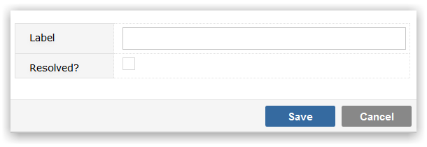

Use resolution as an addendum to a Status code that is regarded as Final, to provide a more granular level of description. For example, the Status of an issue could be that it is closed but this could simply be because the problem cannot be replicated, in which case you might wish to add a Resolution Code 'Unresolved', to allow you to treat the Status as Final while acknowledging that the issue may potentially re-occur.
Make sure that you have selected the Project Template that you wish to maintain Resolution values for from the drop-down list.
To Add a new Resolution value, click on the Add button. You will be prompted to provide:

Click Save to create the Resolution value.
To maintain the Label or Resolved? values, click in the appropriate field and use Inline editing to easily and instantly change the field value.
To delete a Resolution click on the delete icon to the right of the screen. You will be required to specify an alternative value that any items in the deleted Resolution will be recoded to. This is to ensure that there are no orphaned records in your data, with Resolution codes that do not exist in the Template.